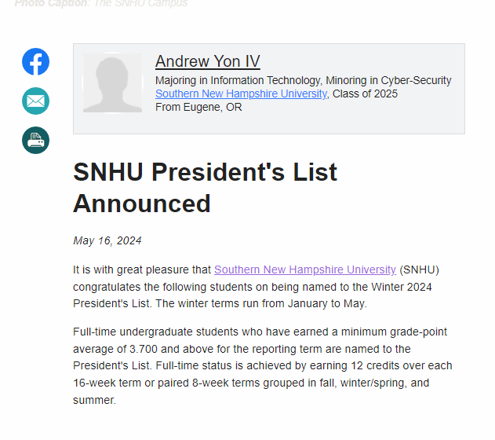
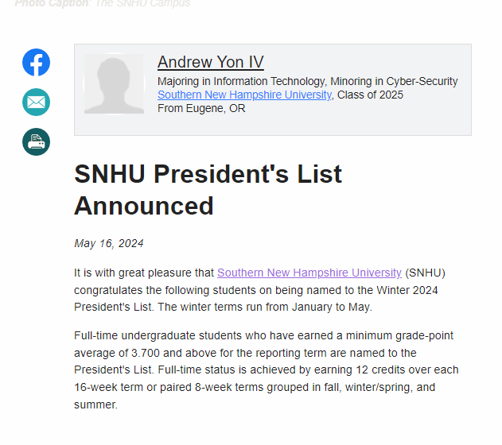

Bio
Andrew Yon 4th is a student at Southern New Hampshire University, where he is studying for a Bachelor of Sciences in Cyber-Security. He is also a self-taught artist and has been creating original artwork (woodwork and computer drawings) and stories for over 30 years.
He was rejected by Royal Road's AI for a lack of political correctness. He is the author of the Tales of a Miscreant series of books, which are available on this page. He is also the creator of the original AI artwork that is displayed on this website. He is currently working on book four of his series and a plan to put the artwork, story line into HTML encoding or possibly RenPy to create an electronic visual novel.


 
